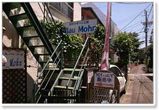
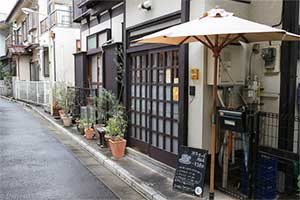

<!doctype html>
<html>

	<head>
		<meta charset="utf-8">
		<title>美味しいパンと暮らす街　代々木上原/代々木公園</title>
		<meta name="description" content="日々の生活に美味しいパンのある暮らし。代々木上原/代々木公園エリア">
		<meta name="keywords" content="パン, bread, ベーグル, bagle, 代々木上原, yoyogi=uehara, 代々木公園, yoyogi-kouen">
		<meta name="viewport" content="width=device-width,initial-scale=1.0">
		<meta http-equiv="X-UA-Compatible" content="IE=edge,chrome=1">
		<meta name="format-detection" content="telephone=no">
        <!--[if lt IE 9]>
		<script src="js/html5.js"></script>
		<script src="js/css3-mediaqueries.js"></script>
		<script src="http://api.html5media.info/1.1.4/html5media.min.js"></script>
		<link rel="stylesheet" type="text/css" href="style_pc.css" media="screen" />
		<![endif]-->
        
        <!--[if lt IE 10]>
        <link rel="stylesheet" href="css/ie.css">
        <![endif]-->
        
		<link rel="stylesheet" href="css/style.css">
		<link rel="stylesheet" href="css/vegas.min.css" type="text/css" media="all">
		<link rel="stylesheet" href="css/sp.css">
        <link rel="stylesheet" href="css/animations.css">

		<script src="https://code.jquery.com/jquery-2.1.3.min.js"></script>
		<script src="js/smooth-scroll.js"></script>
		<script type="text/javascript" src="js/smart-crossfade.js"></script>
        <script src="js/scroll_top.js"></script>
        <script src="http://jaysalvat.github.io/vegas/releases/latest/vegas.js"></script>
        
        <script>
            $(window).scroll(function() {
                $('#animatedElement').each(function(){
                var imagePos = $(this).offset().top;
        
                var topOfWindow = $(window).scrollTop();
                    if (imagePos < topOfWindow+400) {
                        $(this).addClass("slideUp");
                    }
                });
            });
        </script>
      	<script>
            $('#animatedElement').click(function() {
                $(this).addClass("slideUp");
            });
       	</script>
        
	</head>
	
    <body>
    
    	<script>
			$('body').vegas({
		  overlay: true ,
		  transition: 'blur',
		  transitionDuration: 2000,
		  delay: 10000,
		  animation: 'random',
		  animationDuration: 10000,
		  slides: [
			{ src: 'images/01.jpg' },
			{ src: 'images/02.jpg' },
			{ src: 'images/03.jpg' },
			{ src: 'images/04.jpg' },
			{ src: 'images/05.jpg' }
			],
			overlay:'images/03.png',
			});

			$(document).ready(function () {
				hsize = $(window).height();
				$("header").css("height", hsize + "px");
			});
			$(window).resize(function () {
				hsize = $(window).height();
				$("header").css("height", hsize + "px");
			});

		</script> <!-- vegasスクリプト -->

		<div id="wrapper">
        
			<header id="header">

                <h1 class="title_bar">
                    <div class="sns">
                        
                        <a href="https://twitter.com/intent/tweet?button_hashtag=Bread_yoyogiuehara" class="twitter-hashtag-button" data-lang="ja"></a>
                        
                    </div>
                </h1>
    
                <div class="title">
                    <div class="title_box">
                    
                        <div class="title_image">
                            <div class="sp_none">
                                
                            </div>
                            <ul class="title_icon">
                                <li class="icon_box01"><div class="load"></div></li>
                                <li class="icon_box02"><div class="hover"><a href="#smoothplay" data-scroll></a></div></li>
                                <li class="icon_box03"></li>
                         　　</ul>
                        </div>
                        
                        <!--スマホタイトル画像-->
                        <div class="icon_box04">
                            
                        </div>
                        
                    </div>
                </div>
                        
                <div id="object" class="animate tossing">
                    
                </div>
                
                <div id="object2" class="animate tossing">
                    
                </div>
                
            </header>

			<div id="main_contents">
          
				<div class="wrap">

					<div id="smoothplay">
						<div class="map">
							<p>地図上の番号をクリックするとお店の紹介ページが見れます。</p>
							
							<map id="area_map" name="area_map">
								<area shape="circle" coords="232,24,10" href="index.html#katane_bakery" alt="MAP-1　カタネベーカリー">
								<area shape="circle" coords="152,199,10" href="index.html#main_mano" alt="MAP-2　マンマーノ">
								<area shape="circle" coords="398,369,10" href="index.html#levain" alt="MAP-3　ルヴァン">
								<area shape="circle" coords="609,260,10" href="index.html#p365days" alt="MAP-4　365日">
								<area shape="circle" coords="479,220,10" href="index.html#jensen" alt="MAP-5　イエンセン">
								<area shape="circle" coords="316,232,10" href="index.html#blau_mohn" alt="MAP-6　ブラウモーン">
								<area shape="circle" coords="737,485,12" href="index.html#ahiru_store" alt="MAP-7　アヒルストア">
								<area shape="circle" coords="582,295,10" href="index.html#tecona_bagle_works" alt="MAP-8　テコナベーグルワークス">
								<area shape="circle" coords="144,378,10" href="index.html#sora_to_kumo" alt="MAP-9　そらとくも">
								<area shape="circle" coords="188,250,10" href="index.html#haritts" alt="MAP-10　ハリッツ">
							</map>
						</div>
					</div>

					<div id="katane_bakery">
                    
						<div class="profile">
								<div class="imformation">
									<p>Tel　　　：03-3466-9834<br>
									Adress　：東京都渋谷区西原1-7-5<br>
									Open　　：7：00～18：30<br>
									<a href="http://www4.point.ne.jp/~katane/accueil.html"  target="_blank">
									HP　　　：http://www4.point.ne.jp/~katane/accueil.html</a></p>
								</div>
								<div class="sumaho_type_imfo">
									<p><h2>カタネベーカリー</h2>　MAP-1<br></p>
									<p>Tel：03-3466-9834<br>
									Adress：東京都渋谷区西原1-7-5<br>
									Open：7：00～18：30<br>
									<a href="http://www4.point.ne.jp/~katane/accueil.html"  target="_blank">
									HP：http://www4.point.ne.jp/~katane/accueil.html</a></p>
								</div>

						</div><!-- profile  -->

						<div class="explanation">

							<div class="text">

								<div class="inside_text">
									   <p>代々木上原駅から徒歩１０分の閑静な住宅街の中にあるカタネベーカリー。<br>決して広くはない店内には数多くのパンが並び、週末にもなると行列の絶えない人気店。<br>食パンだけでも３～４種類あり、ハード系のパン以外にも、惣菜系、菓子パンクロワッサン、そして人気のバゲットには通常のバゲットと、フランス産のヴィロンの粉を使用したバゲットフランセーズがあり、それぞれ違う味わいが楽しめる。素材や製法にこだわって作られたパンは夕方には売り切れてしまうことも。<br>またサードウェーブコーヒーとして有名なブルーボトル青山店のメニューにもここカタネベーカリーの食パンやバゲットなどが採用されている。地下にはカフェスペースもあり、ここのパンを使ったモーニングやランチ、スイーツなどを居心地の良い空間でいただける。
									   <br><br></p>
								</div><!-- inside_text  -->

								<div class="quoted">
										<p><a href="http://fooddesignpost.info/interview/3770/" target="_blank">
										写真出典：http://fooddesignpost.info/interview/3770/</a><br>
										<a href="http://cafedaisuki.blog97.fc2.com/blog-entry-592.html" target="_blank">
										写真出典：http://cafedaisuki.blog97.fc2.com/blog-entry-592.html</a><br>
										<a href="http://baguettelife.com/2012/12/05/katane/" target="_blank">
										写真出典：http://baguettelife.com/2012/12/05/katane/</a></p>
								</div><!-- quoted -->
                                
							</div><!-- text -->

							<div class="image_photo">
								<br>
								
							</div>
                            
							<div class="sumaho_type_photo">
								<br>
								
							</div>

						</div><!-- explanation  -->

					</div><!-- katane_bakery  -->

					<div id="main_mano">
                    
						<div class="profile">
                        
							<div class="imformation">
								<p>Tel　　　：03-6416-8022<br>
								Adress　：東京都渋谷区西原3-6-5<br>
								Open　　：8：00～20：00<br>
								<a href="http://www.mainmano.jp/index.html"  target="_blank">
								HP　　　：http://www.mainmano.jp/index.html</a></p>
							</div>

							<div class="sumaho_type_imfo">
								<p><h2>Main Mano</h2>　MAP-2</p>
								<p>Tel：03-6416-8022<br>
								Adress：東京都渋谷区西原3-6-5<br>
								Open：8：00～20：00<br>
								<a href="http://www.mainmano.jp/index.html"  target="_blank">
								HP：http://www.mainmano.jp/index.html</a></p>
							</div>

						</div><!-- profile  -->

						<div class="explanation">

							<div class="text">
								<div class="inside_text">
									   <p>長年パリの名門ホテルやヨーロッパで修行を積んだオーナーが、2008年にオープンさせたブーランジェリーは、まさにパリ１６区の雰囲気そのもの。<br>看板商品のクロワッサンやバゲットと共に常時６０種類ほどのパンが並ぶ。<br>季節ごとの素材を使った限定商品も多く、常に素材にこだわり、時間を惜しまずに作られたパンはどれも上質な美味しさで、遠方からも訪れる客が多い。<br>店名は「手作り」という意味のフランス語（main）とイタリア語（mano）を合わせ、「手と手を繋ぎたい」という想いが込められている。<br>また併設のカフェスペースでは焼きたてのパンを、美味しい紅茶やオリジナルブレンドのコーヒーとともに、パリのカフェの様な雰囲気の中でくつろいでいただける。<br>2015年７月には、東北沢に「Patisserie MainMano」もオープン。
										<br><br></p>
								</div>
								<div class="quoted">
										<p><a href="http://www.mainmano.jp/index.html" target="_blank">
										写真出典：http://www.mainmano.jp/index.html</a><br>
										<a href="http://tabelog.com/tokyo/A1318/A131811/13059417/" target="_blank">
										写真出典：http://tabelog.com/tokyo/A1318/A131811/13059417/</a><br>
										<a href="http://baguettelife.com/2015/09/14/mainmano_201509/" target="_blank">
										写真出典：http://baguettelife.com/2015/09/14/mainmano_201509/</a></p>
								 </div><!-- quoted -->
							</div><!-- text -->

							<div class="image_photo">
								<br>
								
							</div>

							<div class="sumaho_type_photo">
								<br>
								
							</div>

						</div><!-- explanation  -->

					</div><!-- main_mano  -->

					<div id="levain">

						<div class="profile">
                        
								<div class="imformation">
									<p>Tel　　　：03-3468-9669<br>
									Adress　：東京都渋谷区富ヶ谷2-43-13<br>
									Open　　：8：30～19：30（平日）<br>
									<a href="http://levain317.jugem.jp/"  target="_blank">
									HP　　　：http://levain317.jugem.jp/</a></p>
								</div>

								<div class="sumaho_type_imfo">
									<p><h2>Levain</h2>　MAP-3</p>
									<p>Tel：03-3468-9669<br>
									Adress：東京都渋谷区富ヶ谷2-43-13<br>
									Open：8：30～19：30（平日）<br>
									<a href="http://levain317.jugem.jp/"  target="_blank">
									HP：http://levain317.jugem.jp/</a></p>
								</div>

						</div><!-- profile  -->

						<div class="explanation">

							<div class="text">
								<div class="inside_text">
									   <p>数ある天然酵母パンの「原点」とも言えるブーランジェリー。<br>国産小麦と天然の塩と水にこだわり、自家製の天然酵母にこだわって、ヨーロッパの伝統的な製法に基づいて作られたパンは、多くのパン好きを魅了し全国からここのパンを求めにたくさんの人が訪れる。<br>ルヴァンとは、フランス語で「酵母」の意味。この天然酵母のうま味を最大限に活かしたパンは、ずっしりとした重みがあり、少し酸味がきいている。<br>店で一番人気のメランジェは、この酸味のきいたパンの中にぎっしりとドライフルーツとナッツが入った、ここでしか味わえない食事パン。硬めのバゲットは何もつけなくても噛めば噛むほどに味わいが増す。<br>隣接するカフェ「Le Chalet （ル・シャレ）」では、このルヴァンのパンと共に、季節の素材にこだわった体に優しい食事がいただけます。
										<br><br></p>
								</div>
								<div class="quoted">
										<p><a href="http://blog.goo.ne.jp/negokunta/e/fcbab37a73eb590d9e547866cc68baea" target="_blank">
										写真出典：http://blog.goo.ne.jp/negokunta/e/fcbab37a73eb590d9e547866cc68baea</a><br>
										<a href="http://yoyogi-park.localz.jp/venue/340/" target="_blank">
										写真出典：http://yoyogi-park.localz.jp/venue/340/</a><br>
										<a href="http://pannavi.tv/promo/" target="_blank">
										写真出典：http://pannavi.tv/promo/</a><br>
										<a href="http://mon-favori-kaname.at.webry.info/201403/article_16.html" target="_blank">
										写真出典：http://mon-favori-kaname.at.webry.info/201403/article_16.html</a></p>
								 </div><!-- quoted -->
							</div><!-- text -->

							<div class="image_photo">
								<br>
								
							</div>
                            
							<div class="sumaho_type_photo">
								<br>
								
							</div>

						</div><!-- explanation  -->

					</div><!-- levain  -->

					<div id="p365days">
                    
						<div class="profile">
                        
								<div class="imformation">
									<p>Tel　　　：03-6804-7357<br>
									Adress　：東京都渋谷区富ヶ谷1-6-12<br>
									Open　　：9：00～19：00<br>
									<a href="http://www.365jours.jp/"  target="_blank">
									HP　　　：http://www.365jours.jp/</a></p>
								</div>

								<div class="sumaho_type_imfo">
									<p><h2>365日</h2>　MAP-4</p>
									<p>Tel：03-6804-7357<br>
									Adress：東京都渋谷区富ヶ谷1-6-12<br>
									Open：9：00～19：00<br>
									<a href="http://www.365jours.jp/"  target="_blank">
									HP：http://www.365jours.jp/</a></p>
								</div>

						</div><!-- profile  -->

						<div class="explanation">

							<div class="text">
								<div class="inside_text">
									   <p>「365日毎日の積み重ねが、人の心と体を作り、毎日を充実させる。」<br>そのコンセプトの元に作られた、パンを中心とする食のセレクトショップ。<br>インテリアから商品のディスプレイ、セレクトされた食材など、全てにオーナーのセンスとこだわりが感じられる店。<br>質の良い国産小麦にこだわり、野菜は全て契約農家から仕入れ、パンに使うハムやベーコンは豚をまるごと仕入れて加工するなど、あくまでも「安心・安全」な食材にこだわる。<br>人気商品はクロワッサン、食パン、あんぱん、クロッカンショコラなど、シンプルだけれど素材の良さが引き立つものが多い。<br>店内にはイートインスペースもあり、昼間からワインを片手に美味しいパンを楽しむ人の姿も多く見られる。
										<br><br></p>
								</div>
								<div class="quoted">
										<p><a href="http://www.omote-sando.info/gourmet/33955" target="_blank">
										写真出典：http://www.omote-sando.info/gourmet/33955</a><br>
										<a href="http://www.timeout.jp/tokyo/ja/" target="_blank">
										写真出典：http://www.timeout.jp/tokyo/ja/</a><br>
										<a href="http://www.365jours.jp/top/" target="_blank">
										写真出典：http://www.365jours.jp/top/</a></p>
								 </div><!-- quoted -->
							</div><!-- text -->

							<div class="image_photo">
								<br>
								
							</div>

							<div class="sumaho_type_photo">
								<br>
								
							</div>

						</div><!-- explanation  -->

					</div><!-- p365days  -->

					<div id="jensen">

						<div class="profile">
                        
								<div class="imformation">
									<p>Tel　　　：03-3465-7843<br>
									Adress　：東京都渋谷区元代々木町４－３<br>
									Open　　：[月～金]6:50～19:00 / [土]6:50～16:00<br>
									HP　　　：なし</p>
								</div>

								<div class="sumaho_type_imfo">
									<p><h2>JENSEN</h2>　MAP-5</p>
									<p>Tel：03-3465-7843<br>
									Adress：東京都渋谷区元代々木町４－３<br>
									Open：：[月～金]6:50～19:00 / [土]6:50～16:00<br>
									HP：なし</p>
								</div>

						</div><!-- profile  -->

						<div class="explanation">

							<div class="text">
								<div class="inside_text">
									   <p>代々木上原では知らない人のいない、デンマークスタイルのパンの店。<br>３０年前に本場デンマークで修行を積んだオーナーが開いた、デニッシュ・ペストリー（ヴィエナ・ブロート）の草分け的存在。<br>そのデニッシュ・ペストリーは都内のデンマーク大使館からも注文が入るほどで、イエンセンのデニッシュはまさにデンマークの伝統の味。デンマークでは、生地に60%以上バターを含んだものしか、デニッシュと呼んではいけない決まりになっているそう。<br>店内はいつも上質なバターとパイ生地の香りが立ち込め、サクサクのデニッシュにフルーツのコンポートやカスタードを合わせたものや何重層ものパイ生地でできたクロワッサンもあり、そのどれもが濃厚なバターの香りと繊細な触感を楽しめる。
										<br><br></p>
								</div>
								<div class="quoted">
										<p><a href="http://panyameguri.com/" target="_blank">
										写真出典：http://panyameguri.com/</a><br>
										<a href="http://panlabo.jugem.jp/?eid=798" target="_blank">
										写真出典：http://panlabo.jugem.jp/?eid=798</a><br>
										<a href="http://lunapan.exblog.jp/14694955/" target="_blank">
										写真出典：http://lunapan.exblog.jp/14694955/</a></p>
								</div><!-- quoted -->
							</div><!-- text -->

							<div class="image_photo">
								<br>
								
							</div>

							<div class="sumaho_type_photo">
								<br>
								
							</div>

						</div><!-- explanation  -->

					</div><!-- jensen  -->

					<div id="blau_mohn">

						<div class="profile">

								<div class="imformation">
									<p>Tel　　　：03-3467-7406<br>
									Adress　：東京都渋谷区上原1-40-3-101<br>
									Open　　：11:00~19:00（金・土・日曜のみ営業）<br>
									<a href="http://blaumohn.web.fc2.com/index.html"  target="_blank">
									HP　　　：http://blaumohn.web.fc2.com/index.html</a></p>
								</div>

								<div class="sumaho_type_imfo">
									<p><h2>Blau Mohn</h2>　MAP-6</p>
									<p>Tel：03-3467-7406<br>
									Adress：東京都渋谷区上原1-40-3-101<br>
									Open：11:00~19:00（金・土・日曜のみ営業）<br>
									<a href="http://blaumohn.web.fc2.com/index.html"  target="_blank">
									HP：http://blaumohn.web.fc2.com/index.html</a></p>
								</div>

						</div><!-- profile  -->

						<div class="explanation">

							<div class="text">
								<div class="inside_text">
									   <p>古いアパートの１階の角部屋で、週末のみ営業している隠れ家的パン屋。<br>天然酵母パンの中では珍しい、むっちりとした食感のパンが多く、ポストハーベストの心配のない国産小麦にこだわり、天然酵母をゆっくりと発酵させ、全て手作りで作られたパンは、クセがなく素材本来の美味しさが味わえる。<br>人気商品は「ローズマリーブレッド」や「カモミールブレッド」、「シナモンレーズンロール」などハーブを使ったものが多い。<br>また、具材にきんぴらやホイコーローを使った「おにぎりパン」や、野菜がごろごろ乗った「ピザパン」など、個性的な食事パンもそろう。ブレッド以外はほとんどが100～300円という良心的な価格も魅力的。<br>夫婦二人で営業しており売り切れると閉店してしまうため、ローズマリーブレッドのみ前日までの予約が可能。
										<br><br></p>
								</div>
								<div class="quoted">
										<p><a href="http://blogs.yahoo.co.jp/nusadua1251/33216749.html" target="_blank">
										写真出典：http://blogs.yahoo.co.jp/nusadua1251/33216749.html</a><br>
										<a href="http://ameblo.jp/ayanosu8nosu/entry-11585170922.html" target="_blank">
										写真出典：http://ameblo.jp/ayanosu8nosu/entry-11585170922.html</a><br>
										<a href="http://daisuke21.cocolog-nifty.com/daisuke21/2009/04/post-cc65-1.html" target="_blank">
										写真出典：http://daisuke21.cocolog-nifty.com/daisuke21/2009/04/post-cc65-1.html</a></p>
								 </div><!-- quoted -->
							</div><!-- text -->

							<div class="image_photo">
								<br>
								
							</div>
                            
							<div class="sumaho_type_photo">
								<br>
								
							</div>

						</div><!-- explanation  -->

					</div><!-- blau_mohn  -->

					<div id="extra_shops">
						
					</div><!-- extra_shops  -->

					<div id="extra_shops_sumaho">
						<h3>＜番外編＞</h3>
					</div>

					<div id="ahiru_store">

						<div class="extra_shop_photo">
							
							<p><h3>アヒルストア<br><small>(MAP-7)</small></h3></p>
							<p>Tel　　：03-5454-2146<br>Adress ：東京都渋谷区富ヶ谷1-19-4<br>
							   Open　：18:00～24:00（月～金）15:00～21:00（土）<br>
							   HP　　：なし</p>
						</div>
						<div class="extra_shop_text">
							  <h2>アヒルストア  （MAP-7）</h2>
							  <p>代々木公園から渋谷に抜ける奥渋谷の路地裏にあるアヒルストアは、人気のBioワインバーで毎日店内は７時を過ぎるころには満席。<br>店で提供するパンを全て自家製で手作りしており、天然酵母の酸味がワインにも料理にも良く合う。<br>カンパーニュやリュスティック、チャバタなどのハード系が中心だが、もっちりとした食感で噛めば噛むほど味が出る。<br>窓際に並べられたパンはテイクアウトも可能。だが店内分が優先の為ときには買えないほどの人気のパン。<br></p>
						  <div class="quoted">
							<p><a href="http://tabelog.com/tokyo/A1318/A131810/13051357/" target="_blank">
							写真出典：http://tabelog.com/tokyo/A1318/A131810/13051357/</a></p>
						  </div>
						</div><!-- extra_shop_text  -->

					</div><!-- ahiru_store  -->

					<hr>

					<div id="tecona_bagle_works">

						<div class="extra_shop_photo">
							
							<p><h3>tecona bagle works<br><small>(MAP-8)</small></h3></p>
							<p>Tel　　：03-6416-8122<br>Adress ：渋谷区富ヶ谷1-51-12代々木公園ハウスB102<br>
							   Open　：11:00～18:30<br>
							   <a href="http://tecona.jp/" target="_blank">
							   HP　　：http://tecona.jp/</a></p>
						</div>
                        
						<div class="extra_shop_text">
							  <h2>tecona bagle works  （MAP-8）</h2>
							  <p>パンの１種、ベーグルを専門に扱うテコナ ベーグル ワークス。<br>代々木公園駅近くの路地裏、地下への階段を降りたところにあるこの店は、多くのベーグル好き、パン好きが訪れる有名店。<br>扱うベーグルは、大きく分けて３種類。テコナオリジナル酵母を使った「もちもち」、丹沢酵母を使ってずっしりとした食感の「むぎゅむぎゅ」、イーストを使ってふっくらと焼き上げた「ふかふか」。<br>ベーグルを焼く店長は元パティシエで、それぞれのベーグルに最適なフレーバー（具材）を組み合わせて、常時２５～３０種類をそろえる。<br>プレーンベーグルに具材をぎっしり詰めたサンド系も人気。<br></p>
						  <div class="quoted">
							<p><a href="http://www.tokyo21.jpn.org/blog_weekend-shibuya_201110/" target="_blank">
							写真出典：http://www.tokyo21.jpn.org/blog_weekend-shibuya_201110/</a></p>
						  </div>
						</div><!-- extra_shop_text  -->

					</div><!-- tecona_bagle_works  -->

					<hr>

					<div id="sora_to_kumo">

						<div class="extra_shop_photo">
							
							<p><h3>そらとくも<br><small>(MAP-9)</small></h3></p>
							<p>Tel　　：080-2050-1220<br>Adress ：東京都渋谷区上原3-2-3<br>
							   Open　：９:00～1７:30（金～月曜営業）<br>
							   <a href="http://www.sorato-kumoto.jp/index.html" target="_blank">
							   HP　　：http://www.sorato-kumoto.jp/index.html</a></p>
						</div>
                        
						<div class="extra_shop_text">
							  <h2>そらとくも  （MAP-９）</h2>
							  <p>元々は八ヶ岳の麓にオープンしていた同店だが、2014年12月、ベーグルを中心としたパンと焼き菓子の店を代々木上原にオープン。<br>ここは元マルイチベーグル、リリー・オブ・ザ・バレーの巣立っていった、言わばベーグルのレジェンド的な場所。<br>メインのベーグルのベースは２種類あり、自家製の酒粕酵母にて発酵した生地を使ったシンプルな「そらベーグル」と、八ヶ岳の米粉を入れたふっくら生地に具材をゴロゴロ巻き込んだ「くもベーグル」。<br>週の半分は八ヶ岳で営業していることもあり、代々木上原で営業しているのは金曜～月曜のみで、時間帯によっては売り切れてしまうことも。<br></p>
						  <div class="quoted">
							<p><a href="http://ameblo.jp/ayanosu8nosu/entry-12077806672.html" target="_blank">
							写真出典：http://ameblo.jp/ayanosu8nosu/entry-12077806672.html</a></p>
						  </div>
						</div><!-- extra_shop_text  -->

					</div><!-- sora_to_kumo  -->

					<hr>

					<div id="haritts">

						<div class="extra_shop_photo">
							
							<p><h3>haritts<br><small>(MAP-10)</small></h3></p>
							<p>Tel　　：03-3466-0600<br>Adress ：東京都渋谷区上原1-34-2<br>
							   Open　：9：30～18:00（火～木) / 8:00～18:00（金）<br>11:00～18:00（土・祝）　日・月定休<br>
							   <a href="http://kori.to/column/haritts/" target="_blank">
							   HP　　：http://kori.to/column/haritts/</a></p>
						</div>
                        
						<div class="extra_shop_text">
							  <h2>haritts  （MAP-10）</h2>
							  <p>元OLだった姉妹二人が、代々木上原の古民家を改装して2006年にオープンさせた、ドーナツとコーヒーの店。<br>プレーンやクリームチーズなどの定番メニューに日替わりメニューを加え、毎日８種類ほど出しているがすぐに売れてしまうため、時間帯によってはショーケースに並んでいるのは１種類のみのことも。<br>ドーナツの概念をくつがえす「ふわふわ・もちもち」感は多くのファンを作り、リピーターになる客がほとんど。<br>また落ち着いたカフェスペースでは、ハリッツ・スペシャリティ・ブレンドの美味しいコーヒーと共に、焼きたてのドーナツがいただける。<br></p>
						  <div class="quoted">
							<p><a href="http://www.haritts.com/home/" target="_blank">
							写真出典：http://www.haritts.com/home/</a></p>
						  </div>
						</div><!-- extra_shop_text  -->

					</div><!-- haritts  -->

					<hr>

					<footer>
				 		
				 		<h4>NO BREAD, NO LIFE　　YOYOGI-UEHARA/YOYOGI-KOUEN</h4>
				 		<small>Copyright &copy; NO BREAD, NO LIFE. All rights reserved.　　</small>
					</footer>

					<p id="back-top">
						<a href="#" data-scroll></a>
					</p>

				</div><!-- wrap  -->

			</div><!-- main_contents  -->

		</div> <!-- wrapper  -->

		<!-- ボディの最後あたり -->
		<script>
			// スムーススクロールを起動する
			smoothScroll.init() ;
		</script>

	</body>
    
</html>
